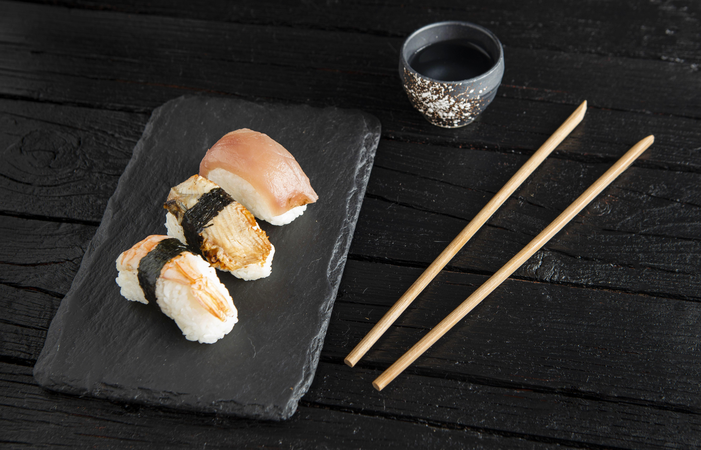
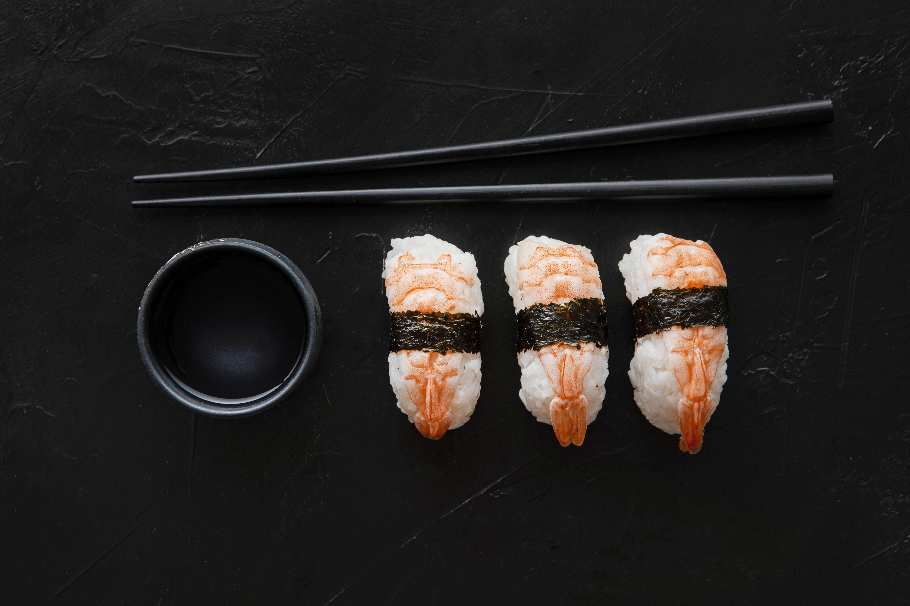
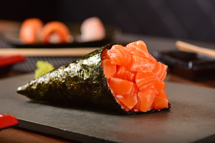

SUSHI
Guide


by Maria João Dutra Rosa

WELCOME
Welcome to the Sushi Guide! Here you will find all the information you need to know about sushi. From the history of sushi to the different types of sushi, you will find everything you need to know about this delicious Japanese dish.
HISTORY
Sushi Types
Click on the plates to see the different types of sushi
GALLERY

Uramaki California Rolls
An "inside-out" roll with rice on the outside, often coated with sesame seeds or roe, and seaweed on the inside.

Nigiri
Hand-formed sushi with a small ball of rice topped with a slice of fish or seafood, sometimes garnished with wasabi or a dab of sauce.

Spicy Tuna Maki Rolls
Traditional sushi rolls made by wrapping fish, vegetables, and rice in seaweed, then sliced into bite-sized pieces.

Nigiri
Hand-formed sushi with a small ball of rice topped with a slice of fish or seafood, sometimes garnished with wasabi or a dab of sauce.

Temaki
Cone-shaped sushi roll filled with rice, fish, and vegetables, wrapped in seaweed. It's designed to be eaten by hand.

Spicy Tuna Maki Rolls
Traditional sushi rolls made by wrapping fish, vegetables, and rice in seaweed, then sliced into bite-sized pieces.